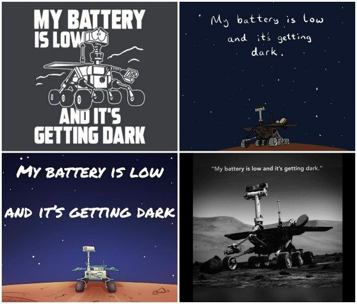
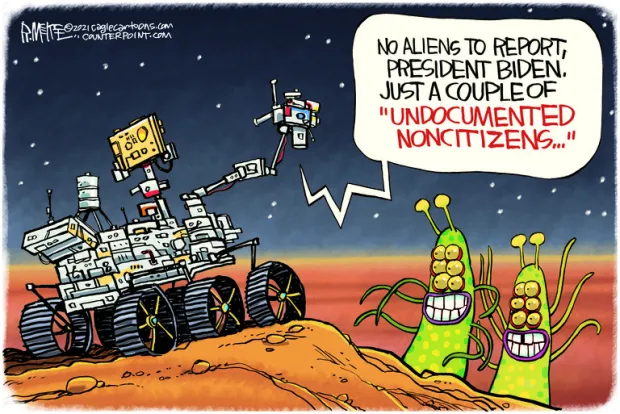
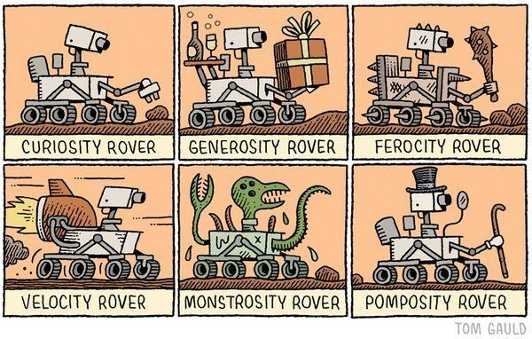
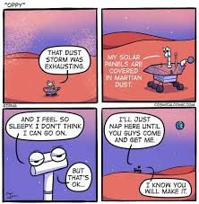
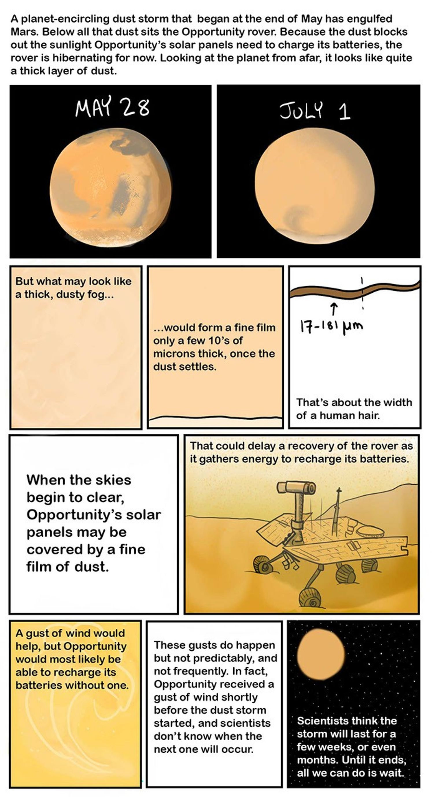
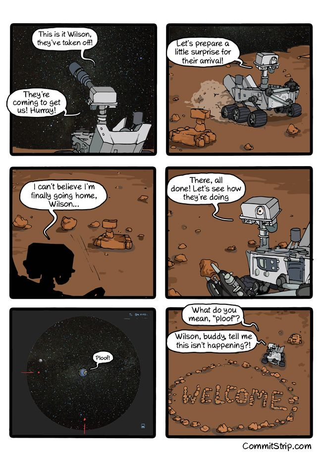
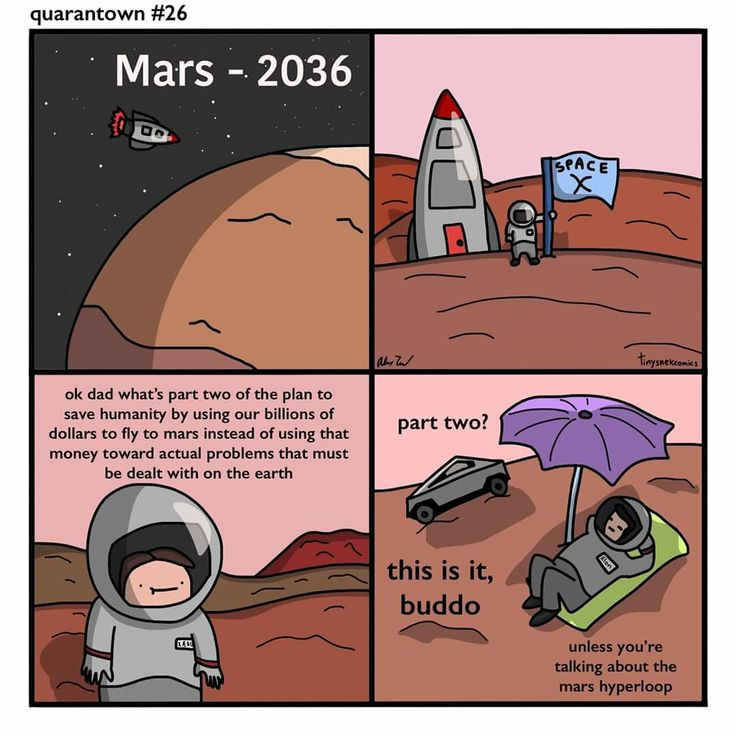
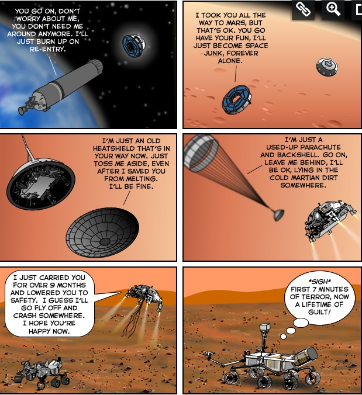
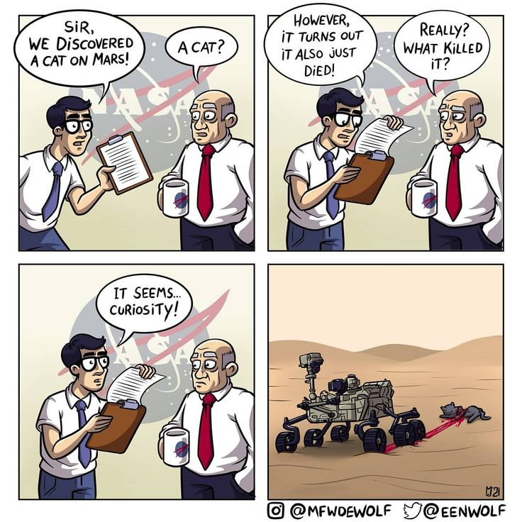
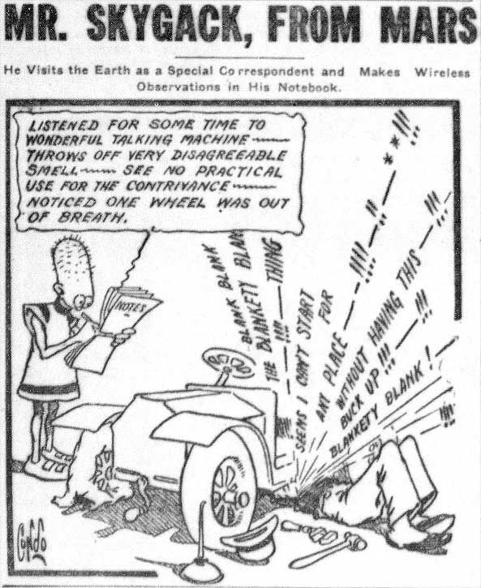

Comic Showcase
Comics have long been a source of entertainment and education, and their impact is especially profound when it comes to topics like space exploration. In the context of Mars and NASA's missions, comics offer a unique way to engage people of all ages, making complex subjects like space travel, science, and technology accessible and fun.
With NASA's ongoing efforts to explore Mars, comics can simplify and visualize the vastness of space. Through captivating illustrations and creative storytelling, comics can bring to life the challenges astronauts face, the excitement of new discoveries, and the potential future of humanity living on Mars.
By presenting space missions in a more approachable and engaging way, comics spark curiosity and inspire the next generation of explorers, scientists, and engineers. The colorful, imaginative nature of comics can help make the dream of traveling to Mars seem tangible and achievable, motivating young minds to pursue careers in STEM (Science, Technology, Engineering, and Math).
Whether through a story about a Martian adventure or a comic explaining NASA's latest rover mission, comics hold the power to inspire and educate, making space exploration not just a subject of study, but an exciting journey to follow and imagine.

Rover's Report: No Aliens, Just Undocumented Noncitizens
This comic depicts a Mars rover reporting back to President Biden. It humorously states that there are no “aliens,” only “undocumented noncitizens,” referencing immigration terminology. The aliens are portrayed as friendly-looking creatures, making the term sound ironic. The comic satirizes the use of politically correct language in immigration debates. It highlights the absurdity of applying human immigration terms to extraterrestrial beings.

Martian Migrants: A Satirical Look at Immigration Terminology
This comic depicts a Mars rover reporting back to President Biden. It humorously states that there are no “aliens,” only “undocumented noncitizens,” referencing immigration terminology. The aliens are portrayed as friendly-looking creatures, making the term sound ironic. The comic satirizes the use of politically correct language in immigration debates. It highlights the absurdity of applying human immigration terms to extraterrestrial beings.

Rovers Gone Wild: A Humorous Take on Mars Exploration
This comic humorously reimagines the famous “Curiosity Rover” by depicting various alternative rovers with exaggerated characteristics. The “Generosity Rover” is shown offering gifts and drinks, emphasizing a friendly and giving nature. In contrast, the “Ferocity Rover” appears aggressive, armed with spikes and a club, as if prepared for battle. The “Monstrosity Rover” takes a bizarre turn, seemingly overtaken by a green, tentacled alien creature. Finally, the “Pomposity Rover” exudes an air of sophistication, complete with a top hat, monocle, and cane, embodying a refined and aristocratic demeanor.

The Lonely Odyssey of a Mars Rover
This comic depicts the emotional journey of a Mars rover, initially designed for a 90-day mission but continuing far beyond its expected lifespan. As the days pass, the rover develops a human-like sense of hope and doubt, wondering if it did a good enough job to be allowed to return home. Despite its tireless efforts, it becomes stuck and eventually loses power, still longing for acknowledgment. The comic portrays the rover with touching innocence and dedication, making it relatable and melancholic. It symbolizes perseverance, loneliness, and the unsung sacrifice of machines in exploration.

A Small Robot's Big Heart: The Opportunity Rover's Legacy
This comic portrays a touching and emotional moment inspired by the real-life Mars rover, Opportunity, which lost power due to a dust storm. The rover, covered in Martian dust, expresses exhaustion and drowsiness, symbolizing its final moments before shutting down. Despite feeling too tired to continue, it reassures itself that it is okay, showing a sense of acceptance. It then decides to “nap” until help arrives, though in reality, no rescue was possible. The final panel conveys hope, as if the rover believes in humanity’s future success in space exploration, making this a heartfelt farewell.
The Red Planet's Fury: A Dust Storm's Impact on Opportunity
This comic explains the effects of a massive dust storm on Mars, which engulfed the planet and left the Opportunity rover in a hibernation state. The thick dust blocked sunlight, preventing the rover’s solar panels from charging its batteries. Even after the storm cleared, a fine layer of dust might remain on the panels, delaying its recovery. Scientists hoped for a gust of wind to clear the dust, but such events are unpredictable. With no definite timeline for the storm to end, all they could do was wait, highlighting the challenges of operating a rover in Mars’ harsh environment.

The Red Planet's Resident Disappointment: A Rover's Tale
The comic portrays a Mars rover excitedly anticipating rescue as a spacecraft takes off. It prepares a “welcome” message using rocks, believing its return home is imminent. However, the spacecraft suddenly disappears with a “ploof,” leaving the rover confused and disheartened. The humor lies in the rover’s hopeful optimism being crushed by an unexpected twist, emphasizing its loneliness and abandonment on Mar

Mars Landing: Where Heroes are Left Behind
The comic humorously depicts the different components of a Mars landing mission feeling abandoned after completing their roles. The heat shield, parachute, and descent stage express sadness as they are discarded, while the rover, now safely on Mars, feels guilty about their fate. It highlights the sacrifices of these expendable parts in space exploration, ending with a witty twist on the phrase “7 minutes of terror” as the rover laments its “lifetime of guilt.”

The Bittersweet Farewell of Mars Lander Components
This comic humorously portrays the emotional “goodbyes” of different parts of a Mars lander system as they are discarded after fulfilling their purpose. The spacecraft components, including the heat shield, parachute, and descent stage, express sadness over being abandoned after successfully delivering the rover to the Martian surface. Each part acknowledges its role in the mission but laments its fate of becoming space junk or crashing. Meanwhile, the rover, feeling guilty, reflects on how it relied on all these components but now continues alone. The comic adds a humorous yet bittersweet perspective to space exploration, highlighting the sacrifices made for successful landings.

The Purr-fect Pun: Curiosity Kills the Cat
This comic strip is a humorous take on wordplay. It depicts a conversation between two NASA scientists discussing the discovery of a cat on Mars. However, the cat is reported to have died, leading one scientist to question what caused its death. The punchline comes when the other scientist dramatically states, "It seems… Curiosity!"—a reference to both the famous phrase "Curiosity killed the cat" and the Curiosity Rover on Mars. The final panel humorously shows the rover seemingly responsible for the cat's demise, reinforcing the pun.
Low on Power, But Not on Spirit: The Opportunity Rover’s Legacy
This image is a tribute to NASA’s Opportunity rover, which explored Mars for nearly 15 years. The phrase “My battery is low, and it’s getting dark” is widely believed to be its final message before it lost contact in 2018 due to a massive dust storm. Though not an official transmission, this poetic interpretation captured the emotions of space enthusiasts worldwide. Opportunity’s mission greatly advanced our understanding of Mars, discovering evidence of ancient water. Its legacy continues to inspire future space exploration.

A Smelly Situation: Mr. Skygack's Earthly Encounters
This comic strip, Mr. Skygack, from Mars, humorously depicts an alien visitor misunderstanding human technology. Mr. Skygack observes a man working on a broken automobile and describes it in a literal yet amusingly incorrect way. He refers to the car as a “wonderful talking machine” due to the frustrated man’s shouting, and he finds its smell unpleasant. The alien also notes that one of the wheels is “out of breath,” likely referring to a flat tire. The comic satirizes how an outsider might misinterpret everyday human activities, making for a clever and humorous perspective.